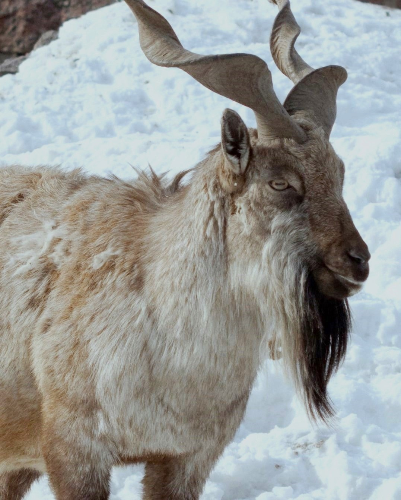
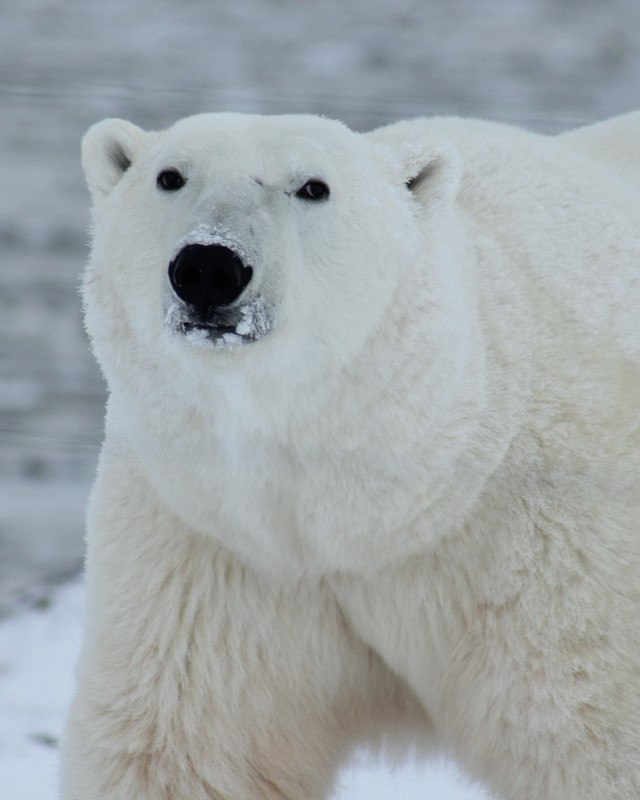
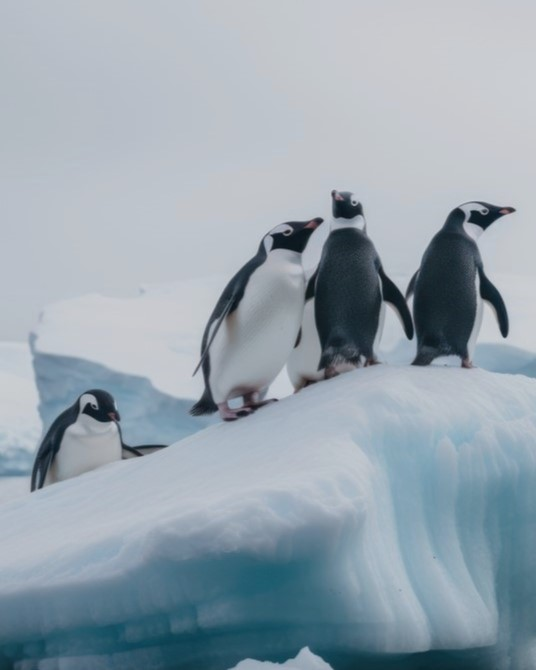

WE'RE SURE YOU MUST KNOW BY NOW, BUT 100% OF PROFITS FROM MERCH SALES GETS SHARED EQUALLY BETWEEN OUR CHOSEN CHARITIES. WE'VE CHOSEN THESE THREE AMAZING ORGANISATIONS FOR THIER PROVEN COMMITMENT TO PRESERVING WILD SPACES

IUCN
THE INTERNATIONAL UNION FOR CONSERVATION OF NATURE IS AN INTERNATIONAL ORGANISATION WORKING IN THE FIELD OF NATURE CONSERVATION AND SUSTAINABLE USE OF NATURAL RESOURCES.

Re:Wild
BY COMBINING MORE THAN THREE DECADES OF CONSERVATION IMPACT, RE:WILD HAVE CONSERVED OVER 45 MILLION ACRES OF WILD PLACES ACROSS 50 COUNTRIES TO REVERSE THE PLIGHT OF 835 THREATENED SPECIES.

World Wide Fund for Nature
WWF IS AN INTERNATIONAL, NON-GOVERNMENTAL ORGANISATION, AND HAVE BEEN WORKING TO SUPPORT WILDERNESS PRESERVATION AND THE REDUCTION OF HUMAN IMPACT ON THE ENVIRONMENT SINCE 1961.